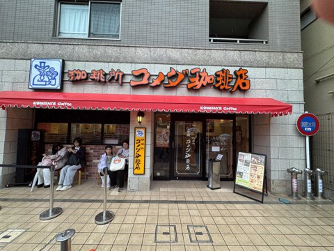

yuuki.shashin.nikki住吉（江東区）・2026年11月15日（日）

♥💬↗
yuuki.shashin.nikki写真は43枚（画像43・動画0）。01:27はDandoriのゲスト画面。10:56は大山東町（板橋区）で、「日出鯛」と書かれた鯛の絵の扉、10:57は海老の絵の壁。11:40は玄関の戸の前に立つ子どもと男性、11:43は肩に子どもを乗せた男性と女性。13:33は「コメダ珈琲店」の店先、13:59は橙色の蓋の容器に入った黄色い飲み物と、コップを持つ子ども。14:38は「パンを楽しむ店 ぱーね」の店先。15:12は東京で、Brooklyn Parlorの入口に並ぶ人たち。19:01は住吉（江東区）で、ビールらしきもののジョッキを持つ男性2人。19:10はご飯、目玉焼き、きのこの載ったハンバーグらしきものの皿。移動は大山東町 → 東京 → 住吉。
写真43枚 ・ 移動21.4km ・ 食事3件 ・ ハイライト3件 ・ Claude 362ターン